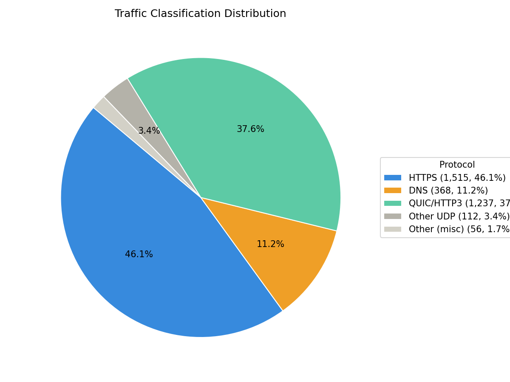

Network Traffic Report
Summary
Total Packets: 3288
Status: Anomaly Detected
Protocol Distribution
- HTTPS: 1515 (46.08%)
- Non-TCP/UDP: 50 (1.52%)
- DNS: 368 (11.19%)
- QUIC/HTTP3: 1237 (37.62%)
- Other UDP: 112 (3.41%)
- Other TCP: 6 (0.18%)

Anomaly Detection
- Spike at window 15: 307 packets (z=4.23)
- Spike at window 44: 343 packets (z=4.84)
Time-Based Analysis